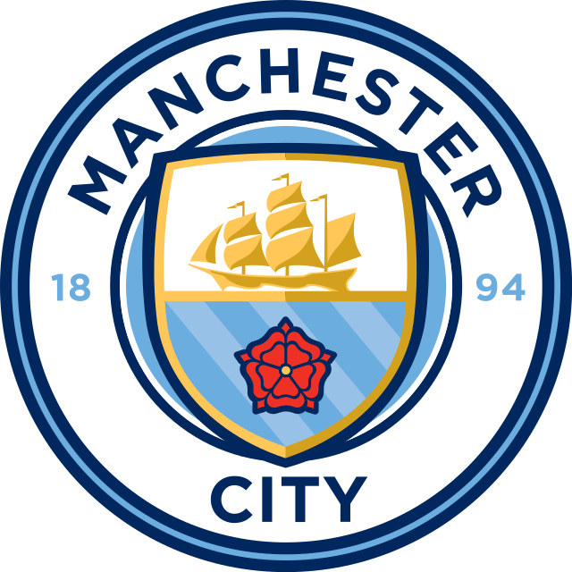
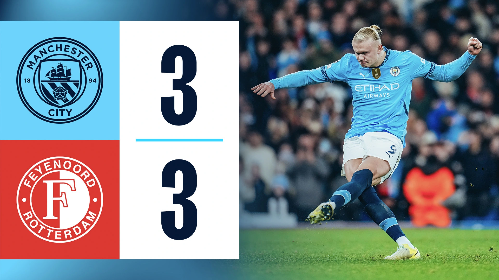

Sign In
My Page
Manchester City Home
search
NEWS
남자팀
모든 뉴스 보기
맨시티, 3득점 후 3실점... 페예노르트와 무승부
자신감 여전한 펩 "내 느낌? 올 시즌 우리는 매우 잘할 거야"
맨시티, 홈에서 토트넘 상대로 0-4 대패
펩 과르디올라 감독, 맨시티와 2년 재계약 체결!
여자팀
"후지노, 훌륭한 재능" 맨시티 워맨 스타 탄생 예감?
맨시티 워맨, 잉글랜드 연령별 대표 센터백 레이젤 영입
맨시티 워맨, 18세 골키퍼 아네츠 영입 완료
맨시티 여자팀도 해외 투어…올여름 호주 간다
EDS & 아카데미
맨시티 U-18, 라이스 감독 선임…모든 연령별 팀 코칭스태프 구성 완료
맨시티 2군 팀 코칭스태프 구성 완료…U-18 팀 감독이 계승
[인터뷰] 맨시티 신임 아카데미 디렉터가 밝힌 유스 육성의 필수 조건
프리미어리그2 이번 시즌의 선수에 오른 맥아티
VIDEO
하이라이트-남성팀
모든 하이라이트 보기
[하이라이트] 맨시티 3-3 페예노르트(UCL 리그 페이즈 R5)
[풀 하이라이트] 맨시티 0-4 토트넘(PL 13R, 24/25)
[풀 하이라이트] 브라이튼 2-1 맨시티(PL 11R, 24/25)
[풀 하이라이트] 본머스 2-1 맨시티(PL 10R, 24/25)
비하인드 영상-남성팀
챔피언스 리그 우승 트로피 시상식!
인사이드 CITY 397 | 챔피언스 퍼레이드 스페셜
하이라이트-여성팀
여자 FA컵 결승전 H/L | 첼시 3-2 CITY
FA 여자슈퍼리그 H/L | 레딩 0-4 CITY
FA 여자슈퍼리그 H/L | CITY 6-0 버밍엄
FA 여자슈퍼리그 H/L | CITY 7-2 브라이튼
비하인드 영상-여성팀
콘티넨탈컵 우승으로 가는 길
콘티넨탈컵 우승 세리모니!
MATCH
남성팀
모든 매치 보기
Liverpool vs Manchester City
Manchester City vs Nottingham Forest
Juventus vs Manchester City
Manchester City vs Manchester United
Aston Villa vs Manchester City
Manchester City vs Everton
Leicester City vs Manchester City
여성팀
모든 매치 보기
Manchester City vs Leicester City
Everton vs Manchester City
FC Barcelona vs Manchester City
Manchester City vs Manchester United
Aston Villa vs Manchester City
TEAM
골키퍼
33.스콧 카슨
31.에데르송
18. 슈테판 오르테가 모레노
수비수
25.마누엘 아칸지
6.네이선 아케
3.후벵 디아스
24.요슈코 그바르디올
82.리코 루이스
5.존 스톤스
2.카일 워커
97.조슈아 윌슨에스브랜드
미드필더
52.오스카 밥
17.케빈 데 브라위너
11.제레미 도쿠
47.필 포든
10.잭 그릴리쉬
19.일카이 귄도안
미드필더
8.마테오 코바치치
87.제임스 맥아티
27.마테우스 누네스
16.로드리 에르난데스
26.사비뉴
20.베르나르두 실바
공격수
9.엘링 홀란
감독
펩 과르디올라
STORE
스토어
스토어 바로가기
맨시티
맨시티 경기장 - 에티하드 스타디움
맨시티 훈련장 - 에티하드 캠퍼스

[하이라이트] 맨체스터 시티 3-3 페예노르트(UCL 리그 페이즈 R5)
다음 경기
전체 경기 일정
add_circle
12월 1일
티켓 구매